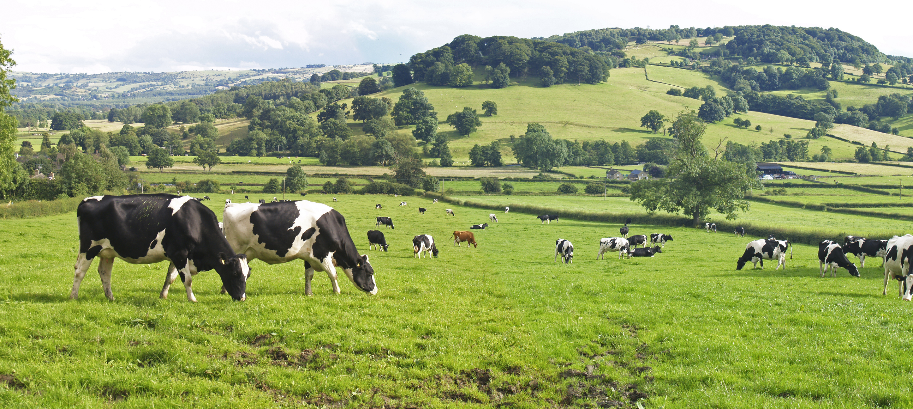
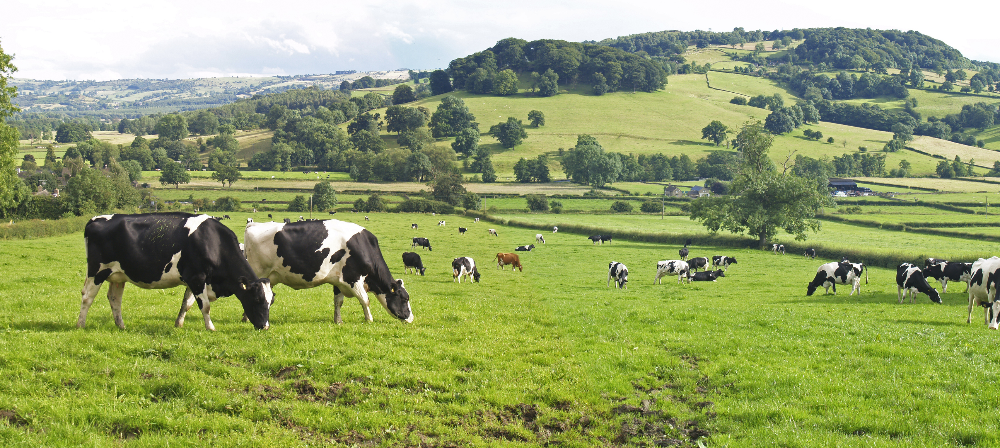

I'm Ahmed
Banks Regulator & Agriprenuer.


A bank regulator with over eight(8) years of experience,.
I understand time management and differentiate emotion from facts or bias.
I developed an interest in Agribusiness because of its potential to uplift people in the rural areas of Nigeria out of poverty.
Responsible for designing out plans, specifications, and estimation of agriculture projects.
Project such as contruction and mangement of farms and agribusiness enterprise.

Problem solving is in my DNA. This skill has been ingrained in me during my years in banking.
Thus, spotting a problem and coming up with a relevant solution is what I do best. I might also be called Proactive.


© 2022 Ahmed Imam.